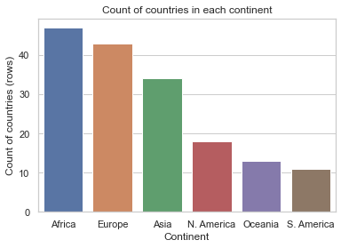
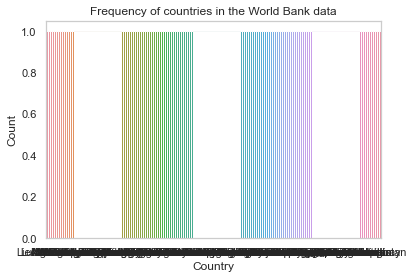
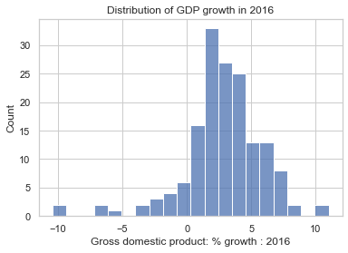
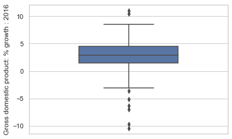

Uni-variate (single variable) visualizations are used to better understand one-dimensional data (think pandas Series) in the dataset.
In this section, we will look at techniques to understand the distribution of each feature. Distribution of a feature, simply put, is the frequency of each value of the variable.
We know from previous discussion that .value_counts() method on a pandas Series gives us the frequency distribution of each value in the Series.
We will use the World Bank dataset, which contains information about countries and social statistics.
import pandas as pd import seaborn as sns from matplotlib import pyplot as pltsns.set_style('whitegrid')data = pd.read_csv('https://raw.githubusercontent.com/fahadsultan/csc272ta/world_bank.csv', index_col=0)data.head()
Continent
Country
Primary completion rate: Male: % of relevant age group: 2015
Primary completion rate: Female: % of relevant age group: 2015
Lower secondary completion rate: Male: % of relevant age group: 2015
Lower secondary completion rate: Female: % of relevant age group: 2015
Youth literacy rate: Male: % of ages 15-24: 2005-14
Youth literacy rate: Female: % of ages 15-24: 2005-14
Adult literacy rate: Male: % ages 15 and older: 2005-14
Adult literacy rate: Female: % ages 15 and older: 2005-14
...
Access to improved sanitation facilities: % of population: 1990
Access to improved sanitation facilities: % of population: 2015
Child immunization rate: Measles: % of children ages 12-23 months: 2015
Child immunization rate: DTP3: % of children ages 12-23 months: 2015
Children with acute respiratory infection taken to health provider: % of children under age 5 with ARI: 2009-2016
Children with diarrhea who received oral rehydration and continuous feeding: % of children under age 5 with diarrhea: 2009-2016
Children sleeping under treated bed nets: % of children under age 5: 2009-2016
Children with fever receiving antimalarial drugs: % of children under age 5 with fever: 2009-2016
Tuberculosis: Treatment success rate: % of new cases: 2014
Tuberculosis: Cases detection rate: % of new estimated cases: 2015
0
Africa
Algeria
106.0
105.0
68.0
85.0
96.0
92.0
83.0
68.0
...
80.0
88.0
95.0
95.0
66.0
42.0
NaN
NaN
88.0
80.0
1
Africa
Angola
NaN
NaN
NaN
NaN
79.0
67.0
82.0
60.0
...
22.0
52.0
55.0
64.0
NaN
NaN
25.9
28.3
34.0
64.0
2
Africa
Benin
83.0
73.0
50.0
37.0
55.0
31.0
41.0
18.0
...
7.0
20.0
75.0
79.0
23.0
33.0
72.7
25.9
89.0
61.0
3
Africa
Botswana
98.0
101.0
86.0
87.0
96.0
99.0
87.0
89.0
...
39.0
63.0
97.0
95.0
NaN
NaN
NaN
NaN
77.0
62.0
5
Africa
Burundi
58.0
66.0
35.0
30.0
90.0
88.0
89.0
85.0
...
42.0
48.0
93.0
94.0
55.0
43.0
53.8
25.4
91.0
51.0
5 rows × 47 columns
Bar Plots
Bar plots are used to visualize the frequency distribution of features that take on a small set of unique values. Such features are more often categorical features as opposed to numerical features.
Visualizing categorical features is easy. We can use .value_counts() method to get the frequency distribution of each value in the feature. This frequency distribution can be plotted using a bar chart.
Note that the plots above are incomplete. If you show this plot to someone, they will not be able to understand what the plot is about.
To complete the plot, so it is understandable, we need to add atleast a title, axis labels and, depending on context, a legend.
Axis labels and Title
To add axis labels and title, we need to assign the plot object returned by sns.barplot to a variable and then use .set() method on the plot object.
ax = sns.barplot(x=val_counts.index, y=val_counts.values);ax.set(xlabel='Continent', ylabel='Count of countries (rows)', title='Count of countries in each continent');

Note that we have used .set() method on the plot object, returned by sns.barplot() method, and passed the arguments xlabel, ylabel and title to the method.
Now, the plot is “complete” and can be understood by someone who has not seen the data.
Bar plots don’t scale. If you try to plot a feature (categorical or numerical) with a lot of unique values, the plot will be unreadable. Yes, even with a title and axis labels!
Here is an example:
val_counts = data['Country'].value_counts();ax = sns.barplot(x=val_counts.index, y=val_counts.values);ax.set(xlabel='Country', ylabel='Count', title='Frequency of countries in the World Bank data');

The plot above is unreadable. We can’t make out the labels on the x-axis. This is because there are too many unique values in the country feature.
There is no easy way to fix this for categorical features. For numerical features, however, there is a way.
Histograms
Histograms look very similar to bar plots. However, they are different in a subtle but critical way.
Histograms solve the problem of plotting a feature with a lot of unique values by binning the values.
Binning is the process of dividing the range of values of a feature into bins. Each bin represents a range of values. The height of the bar in a histogram represents the number of values in the bin. In most cases, the bins are of equal width.
For example, if we have a feature with values ranging from 0 to 100, we can divide the range into 10 bins of width 10 each. The first bin will contain values from 0 to 10, the second bin will contain values from 10 to 20 and so on.
col ="Gross domestic product: % growth : 2016"ax = sns.histplot(data=data, x=col);ax.set(title="Distribution of GDP growth in 2016");

By default, sns.histplot will try to infer the bin edges from the data. However, it is possible to set the bin edges explicitly. This can be useful when comparing multiple distributions.
Box Plots
Box plots display distributions using information about quartiles.
A quartile represents a 25% portion of the data. We say that:
The first quartile (Q1) repesents the 25th percentile – 25% of the data lies below the first quartile
The second quartile (Q2) represents the 50th percentile, also known as the median – 50% of the data lies below the second quartile
The third quartile (Q3) represents the 75th percentile – 75% of the data lies below the third quartile.
In a box plot, the lower extent of the box lies at Q1, while the upper extent of the box lies at Q3. The horizontal line in the middle of the box corresponds to Q2 (equivalently, the median).
The Inter-Quartile Range (IQR) measures the spread of the middle % of the distribution, calculated as the (\(3^{rd}\) Quartile \(-\)\(1^{st}\) Quartile).
The whiskers of a box-plot are the two points that lie at the [\(1^{st}\) Quartile \(-\)(\(1.5 \times\) IQR)], and the [\(3^{rd}\) Quartile \(+\) (\(1.5 \times\) IQR)]. They are the lower and upper ranges of “normal” data (the points excluding outliers). Subsequently, the outliers are the data points that fall beyond the whiskers, or further than ( \(1.5 \times\) IQR) from the extreme quartiles.
count 159.000000
mean 2.780503
std 3.106862
min -10.400000
25% 1.450000
50% 2.900000
75% 4.500000
max 11.000000
Name: Gross domestic product: % growth : 2016, dtype: float64

If it helps, you can think of the box plot as a birds-eye-view of histogram. Histogram as seeing a hill from the side, while box plot is seeing the hill from above through a drone or through a bird’s eye.
Also note that boxplot is to .describe() as barplot is to .value_counts().